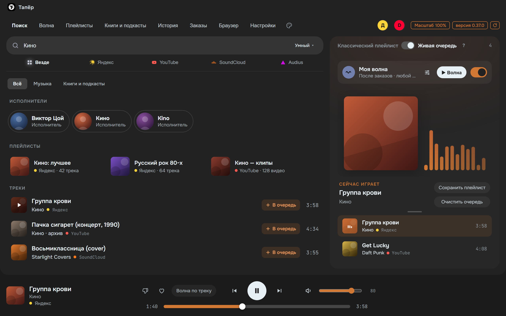
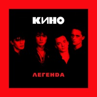
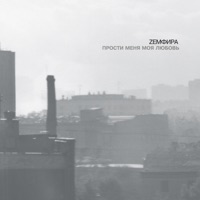
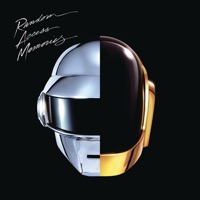
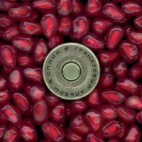
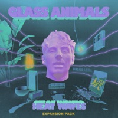
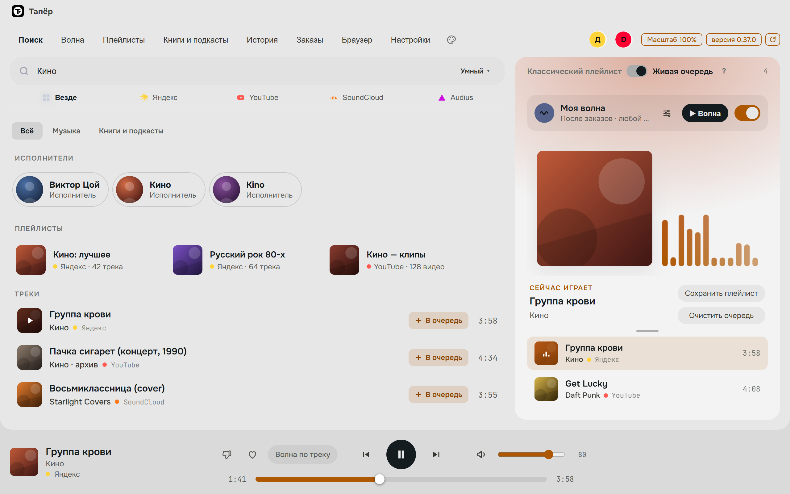
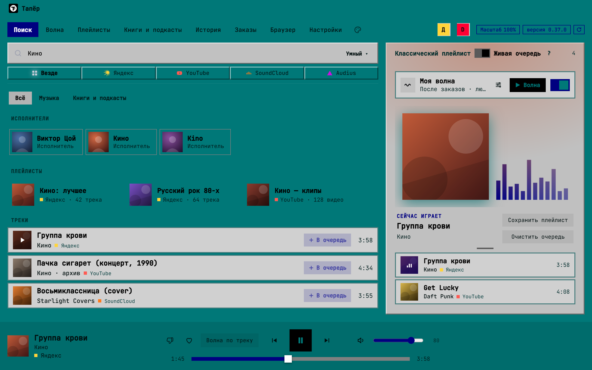

<meta charset="utf-8">
<meta name="viewport" content="width=device-width, initial-scale=1, viewport-fit=cover">
<title>Тапёр</title>
<meta name="claude:viewport-fit-sides" content="cover">
<!-- Временно, до первого релиза в alexshikaka/tapyor: не индексировать (снять в день открытия) -->
<meta name="robots" content="noindex">
<meta name="description" content="Тапёр — бесплатный плеер для стримеров: Яндекс Музыка, YouTube, SoundCloud и Audius в одной очереди, заказы музыки за донаты, оверлеи для OBS.">
<meta property="og:title" content="Тапёр — музыка и заказы для стрима">
<meta property="og:description" content="Бесплатный плеер для стримеров: несколько площадок в одной очереди, заказы за донаты, оверлеи для OBS.">
<meta property="og:image" content="https://alexshikaka.github.io/tapyor-web/img/cover.png">
<meta property="og:url" content="https://alexshikaka.github.io/tapyor-web/">
<meta name="twitter:card" content="summary_large_image">
<link rel="icon" href="img/icon.png">
<link rel="stylesheet" href="fonts/core.css">
<style>
/* Макет: тёмный, как окно Тапёра в теме «Графит». Одна колонка до 1120px; сцена стрима — главный образ. */
:root {
  color-scheme: dark;
  --bg00: #1B1B1B; --bg0: #222222; --bg1: #272727; --bg2: #2D2D2D; --bg3: #343434; --bg4: #414141;
  --ln: #3A3A3A; --ln2: #454545;
  --tx: #E7F0F5; --tx2: #C7D2D8; --tx3: #A5B0B6; --tx4: #8C979D;
  --ac: #D17834; --ac2: #E49A5E; --acbg: #32251A;
  --pri: #7180AC; --pri2: #8794BD; --prit: #111111;
  --ok: #4ADE9A;
  --f-display: 'Manrope', 'Onest', 'Segoe UI', system-ui, sans-serif;
  --f-body: 'Onest', 'Segoe UI', system-ui, sans-serif;
  --f-mono: 'JetBrains Mono', ui-monospace, Consolas, monospace;
  --r-panel: 20px; --r-card: 14px; --r-ctl: 10px;
  --wrap: 1120px;
}
* { box-sizing: border-box; }
html { background: var(--bg00); scroll-behavior: smooth; }
body { background: var(--bg00); color: var(--tx); font: 16px/1.55 var(--f-body); -webkit-font-smoothing: antialiased; }
@media (prefers-reduced-motion: reduce) { html { scroll-behavior: auto; } *, *::before, *::after { animation: none !important; transition: none !important; } }
a { color: inherit; }
:focus-visible { outline: 2px solid var(--ac); outline-offset: 3px; border-radius: 6px; }
h1, h2, h3 { font-family: var(--f-display); font-weight: 800; letter-spacing: -0.02em; text-wrap: balance; margin: 0; }
h2 { font-size: clamp(28px, 4vw, 40px); line-height: 1.1; }
h3 { font-size: 18px; font-weight: 700; letter-spacing: -0.01em; }
p { margin: 0; }
.wrap { max-width: var(--wrap); margin: 0 auto; padding-left: max(16px, env(safe-area-inset-left, 0px)); padding-right: max(16px, env(safe-area-inset-right, 0px)); }
.sec { padding-block: clamp(56px, 9vw, 104px); }
.sec-h { display: grid; gap: 12px; max-width: 680px; margin-bottom: 36px; }
.eyebrow { font: 600 12px/1 var(--f-mono); text-transform: uppercase; letter-spacing: .12em; color: var(--ac2); }
.lead { color: var(--tx3); font-size: 17px; max-width: 62ch; }
.mono { font-family: var(--f-mono); }

/* Кнопки — как в программе: главная заливкой, вторичная — фоном панели */
.btn { display: inline-flex; align-items: center; gap: 10px; height: 48px; padding: 0 22px; border-radius: var(--r-ctl);
  font: 700 15px/1 var(--f-body); text-decoration: none; border: 1px solid transparent; cursor: pointer; white-space: nowrap; }
.btn-main { background: var(--ac); color: var(--prit); }
.btn-main:hover { background: var(--ac2); }
.btn-sub { background: var(--bg2); color: var(--tx); border-color: var(--ln); }
.btn-sub:hover { background: var(--bg3); }
.btn[aria-disabled="true"] { opacity: .55; cursor: default; }
.btn svg { width: 18px; height: 18px; flex: 0 0 auto; }

/* Шапка */
body::before { content: ""; position: fixed; inset: 0 0 auto; height: env(safe-area-inset-top, 0px); z-index: 10; background: var(--bg00); }
.top { position: sticky; top: env(safe-area-inset-top, 0px); z-index: 9; background: color-mix(in srgb, var(--bg00) 88%, transparent); backdrop-filter: blur(10px); border-bottom: 1px solid var(--ln); }
.top .wrap { display: flex; align-items: center; gap: 20px; height: 60px; }
.brand { display: flex; align-items: center; gap: 10px; text-decoration: none; font: 800 18px/1 var(--f-display); letter-spacing: -.01em; }
.brand img { width: 28px; height: 28px; border-radius: 8px; }
.nav { display: flex; gap: 4px; margin-left: auto; align-items: center; }
.nav a { text-decoration: none; color: var(--tx3); font-size: 14px; padding: 8px 10px; border-radius: 8px; }
.nav a:hover { color: var(--tx); background: var(--bg2); }
.nav .btn { height: 36px; padding: 0 14px; font-size: 14px; margin-left: 6px; }
.nav a.gh { display: inline-flex; align-items: center; gap: 7px; color: var(--tx2); }
.nav a.gh svg { width: 18px; height: 18px; }
@media (max-width: 860px) { .nav a.opt { display: none; } }
@media (max-width: 420px) { .nav a.gh span { display: none; } }
.open-note { margin-top: 18px; display: grid; grid-template-columns: 20px minmax(0, 1fr); gap: 10px; padding: 14px 16px; border-radius: var(--r-card); background: var(--bg1); border: 1px solid var(--ln); color: var(--tx2); font-size: 15px; max-width: 62ch; }
.open-note svg { width: 20px; height: 20px; color: var(--tx); margin-top: 1px; }
.open-note b { color: var(--tx); }
.open-note a { color: var(--ac2); }

/* Первый экран */
.hero { padding-block: clamp(40px, 7vw, 80px) clamp(48px, 7vw, 88px); }
.hero-grid { display: grid; grid-template-columns: minmax(0, 6fr) minmax(0, 7fr); gap: clamp(28px, 4vw, 56px); align-items: center; }
@media (max-width: 920px) { .hero-grid { grid-template-columns: minmax(0, 1fr); } }
.hero h1 { font-size: clamp(38px, 5.6vw, 62px); line-height: 1.02; }
.hero h1 em { font-style: normal; color: var(--ac); }
.hero .lead { margin-top: 20px; }
.hero-cta { display: flex; flex-wrap: wrap; gap: 12px; margin-top: 32px; }
.hero-meta { display: flex; flex-wrap: wrap; gap: 6px 18px; margin-top: 18px; color: var(--tx4); font-size: 13px; }
.hero-meta span::before { content: "✓ "; color: var(--ok); }

/* Сцена стрима: рамка 16:9, внутри — настоящий оверлей пака в демо-режиме */
.scene { position: relative; }
.stage { position: relative; aspect-ratio: 16 / 9; max-width: 100%; border-radius: var(--r-card); overflow: hidden;
  background:
    radial-gradient(120% 90% at 18% 20%, #3b2a4a 0%, transparent 55%),
    radial-gradient(90% 80% at 85% 85%, #1d3a44 0%, transparent 60%),
    linear-gradient(160deg, #191a22 0%, #0d0e12 100%);
  border: 1px solid var(--ln2); }
.stage::after { /* «картинка игры»: зерно и виньетка, чтобы оверлей лежал на живом фоне */
  content: ""; position: absolute; inset: 0; pointer-events: none;
  background: repeating-linear-gradient(0deg, rgba(255,255,255,.018) 0 1px, transparent 1px 3px), radial-gradient(ellipse at center, transparent 55%, rgba(0,0,0,.45)); }
.stage iframe { position: absolute; left: 0; top: 0; width: 1920px; height: 1080px; border: 0; transform-origin: 0 0; pointer-events: none; background: transparent; z-index: 1;
  color-scheme: light; /* как у страницы оверлея: иначе Chrome рисует под iframe белую подложку */ }
.stage .live { position: absolute; left: 12px; top: 12px; z-index: 2; display: flex; gap: 8px; align-items: center;
  font: 700 11px/1 var(--f-mono); letter-spacing: .08em; color: #fff; }
.stage .live b { background: #E5484D; padding: 5px 7px; border-radius: 4px; }
.stage .live i { font-style: normal; background: rgba(0,0,0,.55); padding: 5px 7px; border-radius: 4px; color: var(--tx2); }
.scene-app { position: absolute; width: 46%; right: -3%; bottom: -12%; border-radius: 12px; border: 1px solid var(--ln2);
  box-shadow: 0 24px 60px rgba(0,0,0,.55); z-index: 3; }
.scene-cap { margin-top: 14px; display: flex; gap: 10px; align-items: center; color: var(--tx4); font-size: 13px; }
.scene-cap .dot { width: 8px; height: 8px; border-radius: 50%; background: var(--ac); }
@media (max-width: 920px) { .scene-app { display: none; } }

/* Как работает заказ */
.flow { display: grid; grid-template-columns: repeat(3, minmax(0, 1fr)); gap: 16px; counter-reset: st; }
@media (max-width: 860px) { .flow { grid-template-columns: minmax(0, 1fr); } }
.step { background: var(--bg1); border: 1px solid var(--ln); border-radius: var(--r-panel); padding: 20px; display: grid; gap: 14px; align-content: start; }
.step-n { font: 600 12px/1 var(--f-mono); color: var(--tx4); }
.step p { color: var(--tx3); font-size: 15px; }
.mini { background: var(--bg0); border: 1px solid var(--ln); border-radius: var(--r-card); padding: 14px; display: grid; gap: 8px; font-size: 14px; min-height: 132px; align-content: start; }
.mini .who { display: flex; gap: 8px; align-items: baseline; font-weight: 700; }
.mini .sum { color: var(--ok); }
.mini .src { color: var(--tx4); font-weight: 400; font-size: 12px; }
.mini .msg { color: var(--tx2); }
.mini .tag { font: 700 11px/1 var(--f-body); color: var(--ok); letter-spacing: .04em; }
.mini .trk { display: flex; gap: 10px; align-items: center; }
.cov { width: 38px; height: 38px; border-radius: 8px; flex: 0 0 auto; background: linear-gradient(135deg, #5a3d8a, #c0545d); }
.cov.b { background: linear-gradient(135deg, #2b6c7a, #9ad1a8); }
.cov.c { background: linear-gradient(135deg, #8a6a2b, #d17834); }
.trk small { display: block; color: var(--tx4); font-size: 12px; }
.qrow { display: flex; gap: 10px; align-items: center; padding: 6px 8px; border-radius: 8px; }
.qrow.new { background: var(--acbg); outline: 1px solid color-mix(in srgb, var(--ac) 60%, transparent); }
.qrow .n { font: 500 12px var(--f-mono); color: var(--tx4); width: 14px; }
.qrow .w { margin-left: auto; color: var(--ac2); font-size: 12px; }
@keyframes pop { 0%, 30% { opacity: .35; transform: translateY(6px); } 40%, 100% { opacity: 1; transform: none; } }
.flow.play .step:nth-child(2) .mini > * { animation: pop 6s ease-out infinite; }
.flow.play .step:nth-child(3) .qrow.new { animation: pop 6s ease-out infinite; animation-delay: .6s; }
.note { margin-top: 18px; color: var(--tx4); font-size: 14px; max-width: 70ch; }

/* Возможности */
.feats { display: grid; grid-template-columns: repeat(3, minmax(0, 1fr)); gap: 1px; background: var(--ln); border: 1px solid var(--ln); border-radius: var(--r-panel); overflow: hidden; }
@media (max-width: 920px) { .feats { grid-template-columns: repeat(2, minmax(0, 1fr)); } }
@media (max-width: 600px) { .feats { grid-template-columns: minmax(0, 1fr); } }
.feat { background: var(--bg0); padding: 24px; display: grid; gap: 10px; align-content: start; min-width: 0; }
.feat p { color: var(--tx3); font-size: 15px; }
.feat .chips { display: flex; flex-wrap: wrap; gap: 6px; margin-top: 4px; }
.chip { font-size: 12px; padding: 4px 9px; border-radius: 999px; background: var(--bg2); color: var(--tx2); border: 1px solid var(--ln); }
.feat .ico { width: 34px; height: 34px; border-radius: 10px; background: var(--acbg); color: var(--ac2); display: grid; place-items: center; }
.feat .ico svg { width: 18px; height: 18px; }

/* Галерея оверлеев */
.gal { display: grid; grid-template-columns: minmax(0, 1fr) 300px; gap: 20px; align-items: start; }
@media (max-width: 920px) { .gal { grid-template-columns: minmax(0, 1fr); } }
.panel { background: var(--bg1); border: 1px solid var(--ln); border-radius: var(--r-panel); padding: 16px; display: grid; gap: 14px; min-width: 0; }
.seg { display: grid; grid-template-columns: 1fr 1fr; background: var(--bg0); border-radius: var(--r-ctl); padding: 3px; gap: 3px; }
.seg button { font: 600 13px var(--f-body); color: var(--tx3); background: transparent; border: 0; border-radius: 8px; height: 34px; cursor: pointer; }
.seg button[aria-pressed="true"] { background: var(--bg3); color: var(--tx); }
.styles { display: grid; grid-template-columns: 1fr; gap: 2px; max-height: 420px; overflow: auto; padding-right: 4px; }
@media (max-width: 920px) { .styles { grid-template-columns: repeat(auto-fill, minmax(150px, 1fr)); max-height: 260px; } }
.styles button { display: flex; gap: 10px; align-items: center; text-align: left; font: 500 14px var(--f-body); color: var(--tx2); background: transparent; border: 0; border-radius: 8px; padding: 7px 8px; cursor: pointer; }
.styles button:hover { background: var(--bg2); }
.styles button[aria-pressed="true"] { background: var(--acbg); color: var(--tx); }
.styles .n { font: 500 11px var(--f-mono); color: var(--tx4); width: 18px; text-align: right; }
.gal-cap { display: flex; justify-content: space-between; gap: 12px; flex-wrap: wrap; color: var(--tx4); font-size: 13px; margin-top: 12px; }
.gal-cap b { color: var(--tx); font-weight: 600; }
.lbl { font: 600 11px/1 var(--f-mono); text-transform: uppercase; letter-spacing: .1em; color: var(--tx4); }

/* Оболочки */
.shots { display: grid; grid-template-columns: repeat(2, minmax(0, 1fr)); gap: 16px; }
@media (max-width: 760px) { .shots { grid-template-columns: minmax(0, 1fr); } }
.shot { margin: 0; display: grid; gap: 10px; }
.shot img { width: 100%; border-radius: var(--r-card); border: 1px solid var(--ln); display: block; }
.shot figcaption { color: var(--tx3); font-size: 14px; }
.shot figcaption b { color: var(--tx); }
.todo { font: 500 11px var(--f-mono); color: var(--ac2); border: 1px dashed color-mix(in srgb, var(--ac) 55%, transparent); border-radius: 6px; padding: 2px 6px; margin-left: 6px; white-space: nowrap; }

/* Пак стримера */
.pack { display: grid; grid-template-columns: minmax(0, 7fr) minmax(0, 5fr); gap: 0; border: 1px solid var(--ln2); border-radius: var(--r-panel); overflow: hidden; background: var(--bg1); }
@media (max-width: 860px) { .pack { grid-template-columns: minmax(0, 1fr); } }
.pack-l { padding: clamp(24px, 4vw, 40px); display: flex; flex-direction: column; gap: 18px; }
/* Кнопки обеих колонок стоят на одной линии — у нижнего поля блока */
.pack-l .pack-cta, .pack-r .pack-cta { margin-top: auto; }
.pack-l ul { margin: 0; padding: 0; list-style: none; display: grid; gap: 12px; }
.pack-l li { display: grid; grid-template-columns: 22px minmax(0, 1fr); gap: 10px; color: var(--tx2); }
.pack-l li::before { content: "→"; color: var(--ac); font-family: var(--f-mono); }
.pack-l code { font-family: var(--f-mono); font-size: 14px; background: var(--bg3); padding: 1px 6px; border-radius: 5px; }
.pack-r { background: var(--acbg); border-left: 1px solid var(--ln2); padding: clamp(24px, 4vw, 40px); display: flex; flex-direction: column; gap: 14px; }
@media (max-width: 860px) { .pack-r { border-left: 0; border-top: 1px solid var(--ln2); } }
.price { font: 800 64px/1 var(--f-display); letter-spacing: -.03em; }
.price small { font: 500 16px var(--f-body); color: var(--tx3); letter-spacing: 0; margin-left: 6px; }
.pack-r .terms { display: grid; gap: 6px; color: var(--tx2); font-size: 14px; }
.pack-r .btn { justify-content: center; }
.pack-r .fine { color: var(--tx4); font-size: 13px; }
.pack-r .fine a { color: var(--tx3); }
.pack-list { margin: 0; padding: 0; list-style: none; display: grid; gap: 8px; color: var(--tx2); font-size: 15px; }
.pack-list li { display: grid; grid-template-columns: 18px minmax(0, 1fr); gap: 8px; }
.pack-list li::before { content: "+"; color: var(--ac2); font-family: var(--f-mono); font-weight: 700; }
.pack-r code { font-family: var(--f-mono); font-size: 13px; background: var(--bg3); padding: 1px 5px; border-radius: 5px; }
.price { margin-top: 6px; }

/* Данные и установка */
.two { display: grid; grid-template-columns: repeat(2, minmax(0, 1fr)); gap: 16px; }
@media (max-width: 860px) { .two { grid-template-columns: minmax(0, 1fr); } }
.box { background: var(--bg1); border: 1px solid var(--ln); border-radius: var(--r-panel); padding: clamp(20px, 3vw, 32px); display: grid; gap: 16px; align-content: start; min-width: 0; }
.box ul { margin: 0; padding-left: 20px; display: grid; gap: 8px; color: var(--tx2); }
.box ol { margin: 0; padding: 0; list-style: none; display: grid; gap: 14px; counter-reset: i; }
.box ol li { display: grid; grid-template-columns: 28px minmax(0, 1fr); gap: 12px; color: var(--tx2); counter-increment: i; }
.box ol li::before { content: counter(i); width: 28px; height: 28px; border-radius: 50%; background: var(--bg3); display: grid; place-items: center; font: 600 13px var(--f-mono); color: var(--tx); }
.smart { background: #0B5CAD; color: #fff; border-radius: 6px; padding: 14px 16px; font-family: 'Segoe UI', var(--f-body); font-size: 13px; display: grid; gap: 6px; }
.smart b { font-size: 17px; font-weight: 400; }
.smart .row { display: flex; justify-content: space-between; align-items: center; gap: 10px; margin-top: 6px; }
.smart u { color: #fff; }
.smart span.k { border: 1px solid #fff; padding: 5px 12px; outline: 2px solid #FFD43B; outline-offset: 2px; }
.box a.more { color: var(--ac2); font-size: 14px; }

/* Связь, английский, подвал */
.links { display: flex; flex-wrap: wrap; gap: 12px; }
.en { border-top: 1px solid var(--ln); }
.en .wrap { display: grid; grid-template-columns: 160px minmax(0, 1fr); gap: 24px; }
@media (max-width: 700px) { .en .wrap { grid-template-columns: minmax(0, 1fr); } }
.en p { color: var(--tx2); max-width: 68ch; }
.en p + p { margin-top: 10px; color: var(--tx3); }
footer { border-top: 1px solid var(--ln); padding-block: 32px 48px; color: var(--tx4); font-size: 13px; }
footer .wrap { display: grid; gap: 10px; }
footer a { color: var(--tx3); }

/* Twitch: пример чата слева, два пути справа */
.tw { display: grid; grid-template-columns: minmax(0, 5fr) minmax(0, 7fr); gap: 20px; align-items: start; }
@media (max-width: 920px) { .tw { grid-template-columns: minmax(0, 1fr); } }
.chat { background: #18181B; border: 1px solid var(--ln); border-radius: var(--r-panel); padding: 8px 0 14px; font-size: 14px; line-height: 1.5; color: #EFEFF1; min-width: 0; }
.chat-h { display: flex; align-items: center; gap: 8px; padding: 8px 16px 12px; border-bottom: 1px solid #2F2F35; margin-bottom: 8px; font: 600 12px/1 var(--f-mono); text-transform: uppercase; letter-spacing: .08em; color: #ADADB8; }
.dot-live { width: 8px; height: 8px; border-radius: 50%; background: #E5484D; }
.msg { padding: 5px 16px; overflow-wrap: anywhere; }
.msg b { font-weight: 700; margin-right: 6px; }
.msg b::after { content: ":"; color: #EFEFF1; font-weight: 400; }
.msg.bot { background: rgba(209,120,52,.08); }
.msg.bot b { color: var(--ac2); }
.pts-tag { display: inline-block; font: 700 11px/1 var(--f-mono); color: #18181B; background: #B9A3E3; padding: 3px 5px; border-radius: 4px; margin-right: 6px; vertical-align: 1px; }
.tw-ways { display: grid; gap: 16px; min-width: 0; }
.way { background: var(--bg1); border: 1px solid var(--ln); border-radius: var(--r-panel); padding: 20px 22px; display: grid; gap: 12px; }
.way-h { display: flex; align-items: center; justify-content: space-between; gap: 12px; flex-wrap: wrap; }
.way ul { margin: 0; padding-left: 18px; display: grid; gap: 7px; color: var(--tx2); font-size: 15px; }
.way code { font-family: var(--f-mono); font-size: 13px; background: var(--bg3); padding: 1px 5px; border-radius: 5px; }
.tag { font: 600 12px/1 var(--f-mono); padding: 6px 9px; border-radius: 999px; white-space: nowrap; }
.tag-paid { background: var(--acbg); color: var(--ac2); border: 1px solid color-mix(in srgb, var(--ac) 45%, transparent); }
.tag-free { background: color-mix(in srgb, var(--ok) 12%, transparent); color: var(--ok); border: 1px solid color-mix(in srgb, var(--ok) 40%, transparent); }
a.inl { color: var(--ac2); white-space: nowrap; }

/* ===== Переосмысление 15.11: блоки по главным фишкам ===== */
.band { background: var(--bg0); border-block: 1px solid var(--ln); }
.split { display: grid; grid-template-columns: minmax(0, 5fr) minmax(0, 6fr); gap: clamp(24px, 4vw, 56px); align-items: center; }
@media (max-width: 920px) { .split { grid-template-columns: minmax(0, 1fr); } }
.split .sec-h { margin-bottom: 0; }
.fine-print { color: var(--tx4); font-size: 13px; line-height: 1.5; max-width: 60ch; }
.fine-print b { color: var(--tx3); font-weight: 600; }

/* Одна очередь из двух площадок */
.queue { background: var(--bg1); border: 1px solid var(--ln); border-radius: var(--r-panel); padding: 10px; display: grid; gap: 2px; min-width: 0; }
.queue-h { display: flex; justify-content: space-between; align-items: center; padding: 8px 10px 10px; color: var(--tx3); font-size: 13px; }
.queue-h b { color: var(--tx); font-weight: 600; font-size: 14px; }
.qi { display: grid; grid-template-columns: 22px 40px minmax(0, 1fr) auto; gap: 12px; align-items: center; padding: 8px 10px; border-radius: 10px; }
.qi.now { background: var(--acbg); }
.qi .n { font: 500 12px var(--f-mono); color: var(--tx4); text-align: right; }
.qi img { width: 40px; height: 40px; border-radius: 8px; object-fit: cover; display: block; }
.qi .t { min-width: 0; }
.qi .t b { display: block; font-weight: 600; white-space: nowrap; overflow: hidden; text-overflow: ellipsis; }
.qi .t small { display: block; color: var(--tx4); font-size: 12px; white-space: nowrap; overflow: hidden; text-overflow: ellipsis; }
.src { font: 700 11px/1 var(--f-mono); padding: 5px 7px; border-radius: 6px; letter-spacing: .02em; white-space: nowrap; }
.src-ym { background: #FFD43B; color: #1B1B1B; }
.src-yt { background: #E5484D; color: #fff; }
.src-sc { background: #FF7A1A; color: #1B1B1B; }
.src-pc { background: var(--bg3); color: var(--tx2); }
.who { color: var(--ac2); }

/* Умный поиск: живая демонстрация */
.sd { display: grid; grid-template-columns: minmax(0, 5fr) minmax(0, 7fr); gap: 20px; align-items: start; }
@media (max-width: 920px) { .sd { grid-template-columns: minmax(0, 1fr); } }
.sd-list { display: grid; gap: 8px; }
.sd-list button { text-align: left; font: inherit; color: var(--tx2); background: var(--bg1); border: 1px solid var(--ln); border-radius: var(--r-card); padding: 12px 14px; cursor: pointer; display: grid; gap: 4px; }
.sd-list button:hover { border-color: var(--ln2); background: var(--bg2); }
.sd-list button[aria-pressed="true"] { border-color: var(--ac); background: var(--acbg); color: var(--tx); }
.sd-list .meta { font-size: 12px; color: var(--tx4); }
.sd-list .meta b { color: var(--ok); font-weight: 600; }
.sd-out { background: var(--bg1); border: 1px solid var(--ln); border-radius: var(--r-panel); padding: 20px; display: grid; gap: 14px; min-width: 0; }
.sd-step { display: grid; grid-template-columns: 112px minmax(0, 1fr); gap: 14px; align-items: start; }
@media (max-width: 520px) { .sd-step { grid-template-columns: minmax(0, 1fr); gap: 6px; } }
.sd-step .lbl { padding-top: 4px; }
.sd-msg { font-size: 17px; color: var(--tx); }
.sd-q { display: flex; flex-wrap: wrap; gap: 6px; }
.sd-q span { font: 500 14px var(--f-mono); background: var(--bg3); border-radius: 6px; padding: 4px 8px; color: var(--tx); }
.sd-q span.dim { background: transparent; color: var(--tx4); padding-inline: 0; }
.sd-track { display: flex; gap: 12px; align-items: center; min-width: 0; }
.sd-track img { width: 48px; height: 48px; border-radius: 8px; object-fit: cover; }
.sd-track .t b { display: block; font-weight: 600; }
.sd-track .t small { color: var(--tx4); font-size: 13px; }
.verdict { justify-self: start; display: inline-flex; align-items: center; gap: 8px; font-weight: 700; font-size: 14px; padding: 7px 11px; border-radius: 8px; }
.v-ok { background: color-mix(in srgb, var(--ok) 14%, transparent); color: var(--ok); }
.v-doubt { background: color-mix(in srgb, #FFB84D 14%, transparent); color: #FFB84D; }
.v-none { background: var(--bg3); color: var(--tx3); }
.sd-why { color: var(--tx3); font-size: 14px; }
.sd-out > * { animation: sdIn .35s ease-out both; }
.sd-out > *:nth-child(2) { animation-delay: .12s; } .sd-out > *:nth-child(3) { animation-delay: .24s; } .sd-out > *:nth-child(4) { animation-delay: .36s; }
@keyframes sdIn { from { opacity: .6; transform: translateY(4px); } to { opacity: 1; transform: none; } }
.sd-foot { margin-top: 16px; }

/* Донаты: площадки */
.don { display: flex; flex-wrap: wrap; gap: 10px; margin-top: 20px; }
.don span { font-weight: 600; background: var(--bg2); border: 1px solid var(--ln); border-radius: 10px; padding: 9px 14px; }
.sub-h { margin: 56px 0 20px; display: grid; gap: 8px; max-width: 680px; }
.sub-h h3 { font-size: clamp(22px, 2.6vw, 28px); font-weight: 800; letter-spacing: -.02em; }

/* Перенос плейлистов */
.imp { background: var(--bg1); border: 1px solid var(--ln); border-radius: var(--r-panel); padding: 18px; display: grid; gap: 12px; min-width: 0; }
.imp-tabs { display: flex; flex-wrap: wrap; gap: 6px; }
.imp-tabs span { font-size: 13px; padding: 6px 10px; border-radius: 8px; background: var(--bg2); color: var(--tx3); border: 1px solid var(--ln); }
.imp-tabs span.on { background: var(--bg3); color: var(--tx); border-color: var(--ln2); }
.imp-paste { font: 14px/1.7 var(--f-mono); background: var(--bg0); border: 1px solid var(--ln); border-radius: 10px; padding: 12px 14px; color: var(--tx2); white-space: pre-wrap; overflow-wrap: anywhere; }
.imp-paste i { font-style: normal; color: var(--tx4); }
.imp-res { display: grid; gap: 4px; font-size: 14px; }
.imp-res div { display: flex; gap: 10px; align-items: center; }
.imp-res .ok { color: var(--ok); font-weight: 700; width: 14px; }
.imp-res small { color: var(--tx4); margin-left: auto; font-size: 12px; }
.imp .btn { justify-self: start; }
.ways-list { margin: 20px 0 0; padding: 0; list-style: none; display: grid; gap: 12px; }
.ways-list li { display: grid; grid-template-columns: 22px minmax(0, 1fr); gap: 10px; color: var(--tx2); }
.ways-list li::before { content: "→"; color: var(--ac); font-family: var(--f-mono); }
.ways-list b { color: var(--tx); }
/* Телефон: примеры донатов — лентой, чтобы разбор был сразу под ней */
@media (max-width: 920px) { .sd-list { display: flex; overflow-x: auto; scroll-snap-type: x mandatory; padding-bottom: 6px; } .sd-list button { flex: 0 0 min(78%, 280px); scroll-snap-align: start; } }
/* Пак: плашка пробного месяца — главное в правой колонке */
.trial { display: grid; gap: 4px; padding: 12px 14px; border-radius: var(--r-card); background: color-mix(in srgb, var(--ok) 12%, transparent); border: 1px solid color-mix(in srgb, var(--ok) 40%, transparent); }
.trial b { color: var(--ok); font-size: 17px; }
.trial span { color: var(--tx2); font-size: 14px; }
.lead b { color: var(--tx); font-weight: 600; }
/* Первый экран: окно Тапёра — главное, сцена стрима с оверлеем — маленькая, поверх нижнего угла */
.hero .scene { position: relative; padding-bottom: 10%; }
.hero .scene-app { position: relative; display: block; width: 100%; right: auto; bottom: auto; z-index: 1; border-radius: 12px; border: 1px solid var(--ln2); box-shadow: 0 24px 60px rgba(0,0,0,.5); }
.hero .stage { position: absolute; left: -3%; bottom: 0; width: 50%; z-index: 3; box-shadow: 0 24px 60px rgba(0,0,0,.6); }
.hero .stage .live { left: 8px; top: 8px; font-size: 9px; gap: 5px; }
.hero .stage .live b, .hero .stage .live i { padding: 4px 5px; }
.hero .scene-cap { position: relative; z-index: 2; margin-top: 10px; justify-content: flex-end; }
@media (max-width: 920px) {
  .hero .scene { padding-bottom: 0; display: flex; flex-direction: column; }
  .hero .scene-app { order: 1; }
  .hero .stage { order: 2; position: relative; left: auto; width: 72%; margin: -14% 0 0 auto; }
  .hero .scene-cap { order: 3; }
  .hero .scene-cap { justify-content: flex-start; }
}
</style>

<header class="top">
  <div class="wrap">
    <a class="brand" href="#top">Тапёр</a>
    <nav class="nav" aria-label="Разделы">
      <a class="opt" href="#sources">Яндекс и YouTube</a>
      <a class="opt" href="#orders">Заказы</a>
      <a class="opt" href="#overlays">Оверлеи</a>
      <a class="opt" href="#pack">Цена</a>
      <a href="#en" lang="en">EN</a>
      <a class="gh" href="https://github.com/alexshikaka/tapyor" aria-label="Код на GitHub"><svg viewBox="0 0 16 16" fill="currentColor" aria-hidden="true"><path d="M8 0C3.58 0 0 3.58 0 8c0 3.54 2.29 6.53 5.47 7.59.4.07.55-.17.55-.38 0-.19-.01-.82-.01-1.49-2.01.37-2.53-.49-2.69-.94-.09-.23-.48-.94-.82-1.13-.28-.15-.68-.52-.01-.53.63-.01 1.08.58 1.23.82.72 1.21 1.87.87 2.33.66.07-.52.28-.87.51-1.07-1.78-.2-3.64-.89-3.64-3.95 0-.87.31-1.59.82-2.15-.08-.2-.36-1.02.08-2.12 0 0 .67-.21 2.2.82.64-.18 1.32-.27 2-.27.68 0 1.36.09 2 .27 1.53-1.04 2.2-.82 2.2-.82.44 1.1.16 1.92.08 2.12.51.56.82 1.27.82 2.15 0 3.07-1.87 3.75-3.65 3.95.29.25.54.73.54 1.48 0 1.07-.01 1.93-.01 2.2 0 .21.15.46.55.38A8.013 8.013 0 0016 8c0-4.42-3.58-8-8-8z"/></svg><span>GitHub</span></a>
      <a class="btn btn-main" href="#install">Скачать</a>
    </nav>
  </div>
</header>

<main id="top">
  <section class="hero">
    <div class="wrap hero-grid">
      <div>
        <h1>Заказы с Яндекс Музыки — <em>прямо на стрим</em></h1>
        <p class="lead">Тапёр — плеер для стримеров: Яндекс Музыка и YouTube в одной очереди, умный поиск по тексту доната, заказы из DonationAlerts, DonatePay, Twitch и Streamer.bot.</p>
        <div class="hero-cta">
          <a class="btn btn-main" href="https://github.com/alexshikaka/tapyor/releases/latest">
            <svg viewBox="0 0 24 24" fill="none" stroke="currentColor" stroke-width="2.2" stroke-linecap="round" stroke-linejoin="round" aria-hidden="true"><path d="M12 4v11M7 10l5 5 5-5M5 20h14"/></svg>
            Скачать для Windows</a>
          <a class="btn btn-sub" href="https://github.com/alexshikaka/tapyor">
            <svg viewBox="0 0 16 16" fill="currentColor" aria-hidden="true"><path d="M8 0C3.58 0 0 3.58 0 8c0 3.54 2.29 6.53 5.47 7.59.4.07.55-.17.55-.38 0-.19-.01-.82-.01-1.49-2.01.37-2.53-.49-2.69-.94-.09-.23-.48-.94-.82-1.13-.28-.15-.68-.52-.01-.53.63-.01 1.08.58 1.23.82.72 1.21 1.87.87 2.33.66.07-.52.28-.87.51-1.07-1.78-.2-3.64-.89-3.64-3.95 0-.87.31-1.59.82-2.15-.08-.2-.36-1.02.08-2.12 0 0 .67-.21 2.2.82.64-.18 1.32-.27 2-.27.68 0 1.36.09 2 .27 1.53-1.04 2.2-.82 2.2-.82.44 1.1.16 1.92.08 2.12.51.56.82 1.27.82 2.15 0 3.07-1.87 3.75-3.65 3.95.29.25.54.73.54 1.48 0 1.07-.01 1.93-.01 2.2 0 .21.15.46.55.38A8.013 8.013 0 0016 8c0-4.42-3.58-8-8-8z"/></svg>
            Код на GitHub</a>
        </div>
        <p class="open-note">
          <svg viewBox="0 0 24 24" fill="none" stroke="currentColor" stroke-width="2" stroke-linecap="round" stroke-linejoin="round" aria-hidden="true"><rect x="3" y="11" width="18" height="11" rx="2"/><path d="M7 11V7a5 5 0 0 1 9.9-1"/></svg>
          <span><b>Плеер — открытый код и работает сам по себе.</b> Все площадки, заказы за донаты, Streamer.bot и OBS-панель — бесплатно и без ограничений. Платные только <a href="#pack">оверлеи и свой Twitch-бот</a> — и их можно <b>целый месяц пробовать бесплатно</b>.</span>
        </p>
        <div class="hero-meta"><span>Бесплатно</span><span>Открытый код</span><span>Windows 10 и 11</span><span id="ver">Последняя версия на GitHub</span></div>
      </div>
      <div class="scene">
        <div class="stage" data-stage>
          <div class="live"><b>LIVE</b><i>оверлей Тапёра в OBS</i></div>
          <iframe title="Пример оверлея: что играет и что дальше" data-ov src="overlay/playlist.html?demo=1&amp;style=card&amp;pos=bl&amp;size=250&amp;nick=1" loading="eager"></iframe>
        </div>
        
        <p class="scene-cap"><span class="dot"></span><span id="heroStyle">Стиль «Карточка» — один из 26</span></p>
      </div>
    </div>
  </section>

  <section class="sec band" id="sources">
    <div class="wrap split">
      <div class="sec-h">
        <span class="eyebrow">Яндекс Музыка и YouTube</span>
        <h2>Яндекс и YouTube в одном плеере — и зрители заказывают из обоих</h2>
        <p class="lead">Песня из Яндекс Музыки, следом клип с YouTube, потом трек с SoundCloud или файл с компьютера. Одна очередь, один плеер, заказы со всех площадок.</p>
        <p class="lead">И это полноценный плеер Яндекс Музыки: «Моя волна», лайки, плейлисты, книги и подкасты. Им удобно пользоваться и без стрима.</p>
        <div class="chips" style="display:flex;flex-wrap:wrap;gap:6px;margin-top:6px"><span class="chip">Яндекс Музыка</span><span class="chip">«Моя волна»</span><span class="chip">YouTube</span><span class="chip">SoundCloud</span><span class="chip">Audius</span><span class="chip">свои файлы</span><span class="chip">книги и подкасты</span></div>
        <p class="fine-print" style="margin-top:14px"><b>Яндекс Музыка</b> — со своим аккаунтом, полные треки — с подпиской Плюс. <b>YouTube</b> — если он у тебя открывается. SoundCloud, Audius и свои файлы работают без входа. Если Яндекс не открывается через VPN, раздел «VPN и Яндекс» подскажет, что пустить мимо него.</p>
      </div>
      <div class="queue" aria-label="Пример очереди">
        <div class="queue-h"><b>Живая очередь</b><span>5 треков · 18 мин</span></div>
        <div class="qi now"><span class="n">▶</span><div class="t"><b>Группа крови</b><small>Кино · заказал <span class="who">dimon_play</span></small></div><span class="src src-ym">ЯНДЕКС</span></div>
        <div class="qi"><span class="n">1</span><div class="t"><b>Хочешь?</b><small>Земфира · заказала <span class="who">lera_k</span> · 300 ₽</small></div><span class="src src-ym">ЯНДЕКС</span></div>
        <div class="qi"><span class="n">2</span><div class="t"><b>Instant Crush</b><small>Daft Punk</small></div><span class="src src-yt">YOUTUBE</span></div>
        <div class="qi"><span class="n">3</span><div class="t"><b>Выхода нет</b><small>Сплин · из чата <span class="who">nastya_s</span></small></div><span class="src src-ym">ЯНДЕКС</span></div>
        <div class="qi"><span class="n">4</span><div class="t"><b>Heat Waves</b><small>Glass Animals</small></div><span class="src src-sc">SOUNDCLOUD</span></div>
      </div>
    </div>
  </section>

  <section class="sec" id="orders">
    <div class="wrap">
      <div class="sec-h">
        <span class="eyebrow">Донаты, Twitch и Streamer.bot</span>
        <h2>Заказы приходят сами — из донатов и из чата</h2>
        <p class="lead">Зритель пишет песню в донате или в чате Twitch. Тапёр находит её и ставит в очередь, а если не уверен — оставляет тебе на решение.</p>
        <div class="don"><span>DonationAlerts</span><span>DonatePay</span><span>Twitch</span><span>Streamer.bot</span></div>
      </div>
      <div class="flow play">
        <div class="step">
          <span class="step-n">1 · донат</span>
          <div class="mini">
            <div class="who">lera_k <span class="sum">300 ₽</span> <span class="src">DonationAlerts</span></div>
            <div class="msg">«поставь Земфиру — Хочешь? спасибо за стрим!»</div>
          </div>
          <p>Донат приходит из DonationAlerts или DonatePay. Песня может быть в любом месте сообщения.</p>
        </div>
        <div class="step">
          <span class="step-n">2 · поиск</span>
          <div class="mini">
            <span class="tag">✓ ТОЧНО</span>
            <div class="trk"><span class="cov"></span><div>Земфира — Хочешь?<small>Яндекс Музыка · 3:29</small></div></div>
          </div>
          <p>Тапёр вытаскивает песню из текста и ищет её на всех площадках сразу. Точное совпадение помечает сам.</p>
        </div>
        <div class="step">
          <span class="step-n">3 · очередь и стрим</span>
          <div class="mini">
            <div class="qrow"><span class="n">1</span><span class="cov b"></span><div class="trk">Группа крови<small>Кино</small></div></div>
            <div class="qrow new"><span class="n">2</span><span class="cov"></span><div class="trk">Хочешь?<small>Земфира</small></div><span class="w">lera_k</span></div>
          </div>
          <p>Песня встаёт в очередь, а оверлей показывает зрителям, кто её заказал и когда она заиграет.</p>
        </div>
      </div>
      <p class="note">Правила заказа задаёшь сам: минимальная сумма, длина трека, запрет на повторы. Всё «точное» можно отправлять в очередь без подтверждения одной галочкой.</p>
      <div class="sub-h">
        <span class="eyebrow">Из чата Twitch</span>
        <h3>Свой бот Тапёра или Streamer.bot — на выбор</h3>
        <p class="lead">Работает один из двух. Streamer.bot подключается бесплатно, свой бот входит в пак стримера — <b>первый месяц бесплатно</b>.</p>
      </div>
      <div class="tw">
        <div class="chat" aria-label="Пример чата Twitch">
          <div class="chat-h"><span class="dot-live"></span>Чат трансляции</div>
          <div class="msg"><b style="color:#7ad3ff">lera_k</b><span>!play Кино — Группа крови</span></div>
          <div class="msg bot"><b>tapyor_bot</b><span>@lera_k поставил: Кино — Группа крови, через ~6 мин. Если песня не та — !cancel</span></div>
          <div class="msg bot"><b>tapyor_bot</b><span>Событие заказов! 60 секунд — пишите !play исполнитель — песня или ссылку</span></div>
          <div class="msg pts"><span class="pts-tag">◆ 500</span><b style="color:#b5f56a">kot_v_sapogah</b><span>Заказать песню: Сплин — Выхода нет</span></div>
          <div class="msg bot"><b>tapyor_bot</b><span>@kot_v_sapogah принято: Сплин — Выхода нет — ждёт стримера</span></div>
        </div>
        <div class="tw-ways">
          <div class="way way-pack">
            <div class="way-h"><h3>Свой бот Тапёра</h3><span class="tag tag-paid">пак · месяц бесплатно</span></div>
            <ul>
              <li>Вход через Twitch одной кнопкой — пароль Тапёр не видит. От твоего имени или от отдельного аккаунта.</li>
              <li><code>!play</code> по названию или ссылке, заказы за баллы канала — баллы возвращаются, если трек не заиграл.</li>
              <li>Заказы всегда или по событию: бот объявляет «Событие заказов!» и разыгрывает треки среди заявок.</li>
              <li>Пауза после заказа, потолок очереди, блокировка тролля правым кликом, приоритеты донатов, баллов и чата.</li>
            </ul>
          </div>
          <div class="way way-free">
            <div class="way-h"><h3>Streamer.bot</h3><span class="tag tag-free">бесплатно в ядре</span></div>
            <ul>
              <li>Готовый шаблон: импортируешь в Streamer.bot, вводишь пароль пульта в Тапёре — и всё.</li>
              <li>Команды <code>!sr</code>, <code>!song</code>, <code>!place</code>, <code>!cancel</code>, <code>!skip</code> и награда за баллы.</li>
              <li>Команды, ответы и права настраиваются конструктором прямо в Тапёре.</li>
              <li>Тапёр и Streamer.bot говорят через твой компьютер — наружу ничего не уходит.</li>
            </ul>
          </div>
        </div>
      </div>
    </div>
  </section>

  <section class="sec band" id="import">
    <div class="wrap split">
      <div class="sec-h">
        <span class="eyebrow">Перенос плейлистов</span>
        <h2>Забери свою музыку откуда угодно</h2>
        <p class="lead">Плейлисты не нужно собирать заново. Тапёр найдёт каждую песню там, где она играет целиком, и пометит, что не нашлось.</p>
        <ul class="ways-list">
          <li><span><b>Списком.</b> Вставь песни из заметок, описания видео или сообщения — по строке на песню.</span></li>
          <li><span><b>ВКонтакте.</b> Открой свою музыку во вкладке «Браузер» и нажми «Собрать песни».</span></li>
          <li><span><b>Ссылкой.</b> Яндекс Музыка, YouTube, SoundCloud, Spotify, Apple Music, Deezer.</span></li>
          <li><span><b>Файлом.</b> Экспорт чата Telegram, таблицы CSV из Exportify и TuneMyMusic.</span></li>
        </ul>
      </div>
      <div class="imp" aria-label="Пример: плейлист из текста">
        <div class="imp-tabs"><span class="on">Из текста</span><span>По ссылке</span><span>Из файла</span><span>ВКонтакте</span></div>
<div class="imp-paste">1. Кино — Группа крови
2. Земфира - Хочешь?
3) сплин выхода нет
Daft Punk – Instant Crush <i>(live 2013)</i>
<i>…и ещё 26 строк</i></div>
        <div class="imp-res">
          <div><span class="ok">✓</span>Кино — Группа крови<small>Яндекс</small></div>
          <div><span class="ok">✓</span>Земфира — Хочешь?<small>Яндекс</small></div>
          <div><span class="ok">✓</span>Сплин — Выхода нет<small>Яндекс</small></div>
          <div><span class="ok">✓</span>Daft Punk — Instant Crush<small>YouTube</small></div>
        </div>
        <span class="btn btn-main" aria-hidden="true">Собрать плейлист · 30 песен</span>
      </div>
    </div>
  </section>

  <section class="sec" id="overlays">
    <div class="wrap">
      <div class="sec-h">
        <span class="eyebrow">Оверлеи для OBS · пак стримера · месяц бесплатно</span>
        <h2>26 стилей. Выбери свой</h2>
        <p class="lead">Это настоящие оверлеи из пака — те же, что встанут в OBS. Здесь они играют выдуманную очередь, а у себя на стриме ты можешь <b>целый месяц пользоваться всеми 26 бесплатно</b>.</p>
      </div>
      <div class="gal">
        <div>
          <div class="stage" data-stage>
            <div class="live"><b>LIVE</b><i id="galLabel">Карточка</i></div>
            <iframe title="Оверлей выбранного стиля" data-ov id="galFrame" src="overlay/playlist.html?demo=1&amp;style=card&amp;pos=br&amp;size=190&amp;nick=1" loading="lazy"></iframe>
          </div>
          <div class="gal-cap"><span>Стиль <b id="galName">№1 · Карточка</b></span><span>Цвета, шрифт, место на экране и что показывать — меняются в настройках</span></div>
        </div>
        <div class="panel">
          <div class="seg" role="group" aria-label="Вид оверлея">
            <button type="button" id="mPlaylist" aria-pressed="true">Плейлист</button>
            <button type="button" id="mMotion" aria-pressed="false">Моушн</button>
          </div>
          <div class="seg" role="group" aria-label="Где на экране">
            <button type="button" id="pBr" aria-pressed="true">↘ Снизу справа</button>
            <button type="button" id="pTr" aria-pressed="false">↗ Сверху справа</button>
          </div>
          <span class="lbl">Стили</span>
          <div class="styles" id="styleList" role="group" aria-label="Стили оверлея"></div>
        </div>
      </div>
    </div>
  </section>

  <section class="sec band" id="looks">
    <div class="wrap">
      <div class="sec-h">
        <span class="eyebrow">Оформление</span>
        <h2>Темы и оболочки — от строгой до DOS</h2>
        <p class="lead">Восемь тем, светлые и тёмные парами, и оболочки, которые меняют окно целиком.</p>
      </div>
      <div class="shots">
        <figure class="shot"><figcaption><b>Восемь тем</b> — тёмные и светлые парами; это светлый «Графит»</figcaption></figure>
        <figure class="shot"><figcaption><b>Оболочка VGA / DOS</b> — одна из трёх, меняет окно целиком</figcaption></figure>
      </div>
    </div>
  </section>

  <section class="sec" id="pack">
    <div class="wrap">
      <div class="pack">
        <div class="pack-l">
          <span class="eyebrow">Ядро · бесплатно навсегда</span>
          <h2>Плеер целиком — открытый код</h2>
          <p class="lead">Ядро Тапёра самодостаточно: ему не нужен пак, чтобы играть музыку и принимать заказы. Лицензия MIT — код можно читать, проверять и собирать самому.</p>
          <ul>
            <li><span>Все площадки в одной очереди, «Моя волна», плейлисты, импорт, свои файлы</span></li>
            <li><span>Заказы за донаты: DonationAlerts, DonatePay — поиск песни, правила, очередь</span></li>
            <li><span>Заказы через Streamer.bot, OBS-панель, <code>now_playing.txt</code></span></li>
            <li><span>Темы, оболочки, знакомство при первом запуске, обновления</span></li>
          </ul>
          <div class="pack-cta"><a class="btn btn-sub" href="https://github.com/alexshikaka/tapyor">Код ядра на GitHub</a></div>
        </div>
        <div class="pack-r">
          <span class="eyebrow">Пак стримера · платно</span>
          <h3 style="font-size: 22px;">Оверлеи и свой Twitch-бот</h3>
          <ul class="pack-list">
            <li><span>26 стилей оверлея-плейлиста и моушн-оверлей</span></li>
            <li><span>Свой чат-бот Twitch: <code>!play</code>, «что играет», заказы за баллы канала — без Streamer.bot</span></li>
            <li><span>Автоматизация заказов из чата: лимиты, очередь, ответы зрителям</span></li>
          </ul>
          <div class="trial"><b>Целый месяц бесплатно</b><span>30 дней со всеми оверлеями и ботом — без карты и без ключа. Понравится — купишь.</span></div>
          <div class="price">$10<small>один раз, потом</small></div>
          <div class="terms"><span>Ключ на 3 компьютера</span></div>
          <p class="fine">Код пака тоже открыт — <a href="https://github.com/alexshikaka/tapyor-modules">tapyor-modules</a>: бот работает с твоим Twitch, и ты видишь, что он ничего не уносит.</p>
          <a class="btn btn-main pack-cta" href="https://ggsel.net/catalog/product/104388863" rel="noopener">Купить ключ на GGSel — $10</a>
        </div>
      </div>
    </div>
  </section>

  <section class="sec" id="install" style="background: var(--bg0); border-block: 1px solid var(--ln);">
    <div class="wrap">
      <div class="sec-h">
        <span class="eyebrow">Установка</span>
        <h2>Скачай и запусти</h2>
      </div>
      <div class="two">
        <div class="box">
          <ol>
            <li><span>Скачай <span class="mono">Tapyor-Setup-….exe</span> из <a href="https://github.com/alexshikaka/tapyor/releases/latest">последнего релиза на GitHub</a>.</span></li>
            <li><span>Запусти. Windows покажет синее окно — у установщика пока нет платной подписи. Нажми «Подробнее», затем «Выполнить в любом случае».</span></li>
            <li><span>Дальше Тапёр обновляется сам. Каждое обновление проверяется подписью до установки.</span></li>
          </ol>
          <div><a class="btn btn-main" href="https://github.com/alexshikaka/tapyor/releases/latest">Скачать для Windows</a></div>
        </div>
        <div class="box">
          <div class="smart" aria-label="Так выглядит окно Windows SmartScreen">
            <b>Windows защитила ваш компьютер</b>
            <span>Фильтр SmartScreen предотвратил запуск неопознанного приложения…</span>
            <u>Подробнее</u>
            <div class="row"><span>Приложение: Tapyor-Setup.exe</span><span class="k">Выполнить в любом случае</span></div>
          </div>
          <h3>Данные и безопасность</h3>
          <ul>
            <li>Входы в сервисы хранятся только на твоём компьютере, зашифрованными.</li>
            <li>Рекламы и счётчиков нет — ни в программе, ни на этом сайте.</li>
            <li>Код открыт, установщик собирается на GitHub, журнал сборки виден всем.</li>
          </ul>
          <a class="more" href="https://github.com/alexshikaka/tapyor/blob/main/PRIVACY.md">Что и куда отправляет Тапёр — PRIVACY.md</a>
        </div>
      </div>
    </div>
  </section>

  <section class="sec" id="contact">
    <div class="wrap">
      <div class="sec-h">
        <span class="eyebrow">Связь</span>
        <h2>Вопросы, ошибки, идеи</h2>
        <p class="lead">Новости и версии — в канале. Вопросы и ошибки — в чате, там отвечает автор.</p>
      </div>
      <div class="links">
        <a class="btn btn-sub" href="https://t.me/tapyor">Telegram-канал</a>
        <a class="btn btn-sub" href="https://t.me/tapyorchat">Telegram-чат</a>
        <a class="btn btn-sub" href="https://github.com/alexshikaka/tapyor/issues">Задачи на GitHub</a>
      </div>
    </div>
  </section>

  <section class="sec en" id="en" lang="en">
    <div class="wrap">
      <span class="eyebrow">English</span>
      <div>
        <p><b>Tapyor</b> is a free, open-source Windows music player for streamers: Yandex Music, YouTube, SoundCloud and Audius in one queue, song requests from donations, and OBS overlays. An optional streamer pack adds a Twitch chat bot and 26 overlay styles (a full month free, then $10 one-time — <a href="https://ggsel.net/catalog/product/104388863">buy a key on GGSel</a>).</p>
        <p>The interface is in Russian for now; English is planned. <a href="https://github.com/alexshikaka/tapyor/releases/latest">Download the latest release</a>.</p>
      </div>
    </div>
  </section>
</main>

<footer>
  <div class="wrap">
    <span>Тапёр — неофициальная программа. Она не связана с Яндексом, Google, YouTube, SoundCloud, Audius, Twitch, DonationAlerts и DonatePay и не одобрена ими.</span>
    <span>Код — <a href="https://github.com/alexshikaka/tapyor">github.com/alexshikaka/tapyor</a> · лицензия MIT · <a href="https://github.com/alexshikaka/tapyor/blob/main/PRIVACY.md">политика данных</a></span>
  </div>
</footer>

<script>
(function () {
  'use strict';
  var STYLES = [
    ['card','Карточка'],['vinyl','Винил'],['bigtype','Крупный шрифт'],['column','Колонка'],['typography','Типографика'],
    ['tilt','Наклонённая обложка'],['ribbon','Нижняя лента'],['vtitle','Вертикальный заголовок'],['win95','Windows 95'],
    ['sys7','Mac System 7'],['winamp','Winamp'],['dos','DOS-терминал'],['swiss','Швейцарский стиль'],['hud8','8-бит HUD'],
    ['synth','Синтвейв'],['paper','Газета'],['polaroid','Полароид'],['code','Код (JSON)'],['cassette','Кассета'],
    ['vu','VU-метр'],['neon','Неоновая вывеска'],['film','Киноплёнка'],['citypop','Сити-поп'],['popart','Поп-арт комикс'],
    ['blueprint','Чертёж'],['radar','Радар HUD']
  ];

  // Оверлей рисуется на холсте 1920×1080, как в OBS; рамка масштабирует его под свою ширину.
  function fit(stage) {
    var f = stage.querySelector('iframe'); if (!f) return;
    f.style.transform = 'scale(' + (stage.clientWidth / 1920) + ')';
  }
  var stages = document.querySelectorAll('[data-stage]');
  stages.forEach(fit);
  if ('ResizeObserver' in window) {
    var ro = new ResizeObserver(function (es) { es.forEach(function (e) { fit(e.target); }); });
    stages.forEach(function (s) { ro.observe(s); });
  } else window.addEventListener('resize', function () { stages.forEach(fit); });

  // size — масштаб оверлея в процентах: в маленькой рамке сайта он должен читаться
  function src(mode, id, pos, size) {
    return 'overlay/' + (mode === 'motion' ? 'motion' : 'playlist') + '.html?demo=1&style=' + id +
      '&pos=' + (pos || (mode === 'motion' ? 'bc' : 'br')) + '&size=' + (size || 190) + '&nick=1';
  }

  // Галерея
  var list = document.getElementById('styleList'), frame = document.getElementById('galFrame');
  var mode = 'playlist', cur = 'card', gpos = 'br';
  STYLES.forEach(function (s, i) {
    var b = document.createElement('button');
    b.type = 'button'; b.dataset.id = s[0]; b.setAttribute('aria-pressed', s[0] === cur ? 'true' : 'false');
    b.innerHTML = '<span class="n">' + (i + 1) + '</span><span></span>';
    b.lastChild.textContent = s[1];
    b.addEventListener('click', function () { pick(s[0]); });
    list.appendChild(b);
  });
  function pick(id) {
    cur = id;
    var i = STYLES.findIndex(function (s) { return s[0] === id; });
    list.querySelectorAll('button').forEach(function (b) { b.setAttribute('aria-pressed', b.dataset.id === id ? 'true' : 'false'); });
    frame.src = src(mode, id, gpos);
    document.getElementById('galName').textContent = '№' + (i + 1) + ' · ' + STYLES[i][1] + (mode === 'motion' ? ' · моушн' : '');
    document.getElementById('galLabel').textContent = STYLES[i][1];
  }
  var bP = document.getElementById('mPlaylist'), bM = document.getElementById('mMotion');
  function setMode(m) { mode = m; bP.setAttribute('aria-pressed', m === 'playlist'); bM.setAttribute('aria-pressed', m === 'motion'); pick(cur); }
  bP.addEventListener('click', function () { setMode('playlist'); });
  bM.addEventListener('click', function () { setMode('motion'); });
  // Где на экране: снизу или сверху справа — для плейлиста и моушна одинаково
  var pBr = document.getElementById('pBr'), pTr = document.getElementById('pTr');
  function setPos(p) { gpos = p; pBr.setAttribute('aria-pressed', p === 'br'); pTr.setAttribute('aria-pressed', p === 'tr'); pick(cur); }
  pBr.addEventListener('click', function () { setPos('br'); });
  pTr.addEventListener('click', function () { setPos('tr'); });

  // Первый экран: стиль сменяется сам, пока страница видна
  var heroF = document.querySelector('.hero iframe'), heroCap = document.getElementById('heroStyle');
  var heroSet = ['card', 'vinyl', 'win95', 'neon', 'cassette', 'dos'], hi = 0;
  var reduce = window.matchMedia && matchMedia('(prefers-reduced-motion: reduce)').matches;
  if (!reduce) setInterval(function () {
    if (document.hidden) return;
    hi = (hi + 1) % heroSet.length;
    var id = heroSet[hi], name = STYLES.find(function (s) { return s[0] === id; })[1];
    heroF.src = src('playlist', id, 'bl', 250);
    heroCap.textContent = 'Стиль «' + name + '» — один из 26';
  }, 7000);


  // Номер последней версии. Кнопки «Скачать» всегда ведут на последний релиз открытого репозитория
  // (github.com/alexshikaka/tapyor/releases/latest) — без подмен (16.11, открытая бета).
  try {
    fetch('https://api.github.com/repos/alexshikaka/tapyor/releases/latest').then(function (r) { return r.ok ? r.json() : null; })
      .then(function (j) { if (j && j.tag_name) document.getElementById('ver').textContent = 'Версия ' + String(j.tag_name).replace(/^v/, '') + ' · бета-тест'; })
      .catch(function () {});
  } catch (e) {}
})();
</script>
